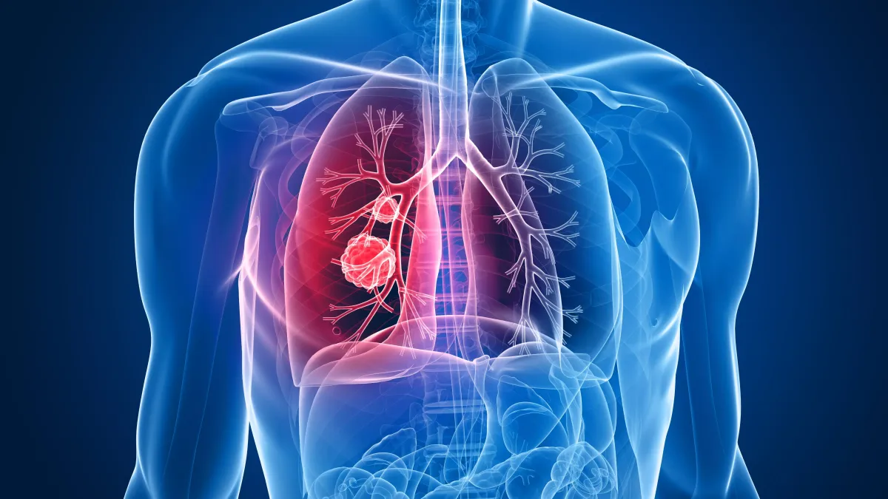

Cancer du poumon
L’asthme est une maladie respiratoire chronique qui affecte les bronches, les voies qui conduisent l’air aux poumons. Elle se caractérise par une inflammation et une hyperréactivité des voies respiratoires, ce qui entraîne un rétrécissement de celles-ci.
Les principales sortes d’asthme :
La bronchite aiguë est une inflammation temporaire des bronches, généralement causée par une infection virale (comme un rhume ou une grippe). Elle entraîne une production excessive de mucus, une toux persistante, parfois accompagnée de fièvre, de fatigue et d’une gêne respiratoire. Elle dure en général moins de 3 semaines et guérit spontanément dans la majorité des cas, sans besoin d’antibiotiques (car elle est souvent virale).
Les principales sortes de bronchite aiguë :

La bronchite chronique est une forme de bronchite persistante, définie cliniquement par :une toux grasse (avec expectorations) qui dure au moins 3 mois par an pendant 2 années consécutives. Elle entre souvent dans le cadre d’une maladie plus large appelée BPCO (Broncho-Pneumopathie Chronique Obstructive), qui combine :inflammation chronique des bronches, obstruction progressive des voies respiratoires, diminution irréversible du souffle.
sortes ou formes cliniques de BPCO :
La BPCO regroupe plusieurs profils ou formes cliniques, selon la prédominance des symptômes
La pneumonie est une infection aiguë des poumons, plus précisément des alvéoles pulmonaires (les petits sacs d’air où se font les échanges gazeux). Elle provoque une inflammation et un remplissage des alvéoles par du pus ou du liquide, ce qui rend la respiration difficile.
Sortes de pneumonie (classées selon la cause ou le mode d’apparition):
La tuberculose est une maladie infectieuse et contagieuse, causée par une bactérie appelée Mycobacterium tuberculosis (ou bacille de Koch). Elle atteint principalement les poumons, mais peut aussi toucher d'autres organes (ganglions, os, reins, cerveau…). Elle se transmet par voie aérienne, par inhalation de gouttelettes contaminées provenant d’une personne infectée.
Sortes de pneumonie tuberculose:

L’emphysème est une maladie chronique et irréversible des poumons, caractérisée par la destruction des alvéoles pulmonaires (petits sacs d’air), ce qui diminue la surface d’échange pour l’oxygène. Il fait partie des maladies de la BPCO (Broncho-Pneumopathie Chronique Obstructive).
Sortes (formes) d’emphysème:

La fibrose pulmonaire est une maladie chronique dans laquelle les tissus des poumons s’épaississent, se durcissent et deviennent cicatriciels. Cela empêche les poumons de fonctionner correctement, réduit la capacité respiratoire et rend les échanges gazeux difficiles. Elle évolue souvent lentement mais peut s’aggraver avec le temps. Elle est irréversible.
Sortes de fibrose pulmonaire :
Le cancer du poumon est une tumeur maligne qui se développe au niveau des tissus pulmonaires, souvent dans les bronches ou les alvéoles. Il est le plus souvent lié au tabagisme, mais aussi à l’exposition à l’amiante, à la pollution, ou à des facteurs génétiques. C’est l’un des cancers les plus meurtriers dans le monde.
Sortes de cancer du poumon (selon les cellules atteintes) :
Le pneumothorax est une affection respiratoire dans laquelle de l’air s’accumule entre les poumons et la paroi thoracique (dans la plèvre), ce qui provoque un décollement partiel ou total du poumon. Le poumon se rétracte et ne peut plus se gonfler normalement, entraînant un essoufflement brutal et des douleurs thoraciques.
Sortes de pneumothorax :

L’apnée du sommeil est un trouble caractérisé par des pauses respiratoires involontaires pendant le sommeil, durant au moins 10 secondes chacune, et se répétant plusieurs fois par heure. Cela entraîne des micro-réveils fréquents, une fatigue chronique, un sommeil non réparateur, et augmente le risque de maladies cardiovasculaires.
Sortes d’apnée du sommeil:

Les allergies respiratoires sont des réactions excessives du système immunitaire à des substances normalement inoffensives (appelées allergènes) présentes dans l’air.
Voici les principales sortes d’allergies respiratoire:

Les maladies interstitielles pulmonaires (MIP) forment un groupe de plus de 200 affections touchant le tissu interstitiel des poumons (la zone autour des alvéoles). Ces maladies entraînent souvent une inflammation, une fibrose (cicatrisation) et une perte progressive de la fonction respiratoire.
Voici les principales sortes de MIP classées par catégories :